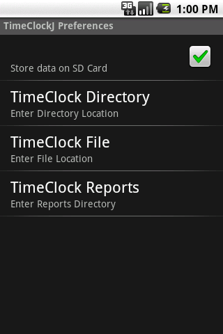

| [ < ] | [ > ] | [ << ] | [ Up ] | [ >> ] | [Top] | [Contents] | [Index] | [ ? ] |
Before using Android, decide how you wish to configure your basic settings. By default, timeclockj stores it’s data according to the following rules:
timeclockj can be configured by pressing the setup button when viewing the Clock, Report or Info tabs, then selecting the phone’s Menu button. Two options will be presented, Local File Storage and Dropbox File Storage:

Dropbox configuration is covered in Android Syncronisation. Use Local File Storage to change the default settings for your time clock file and report generation options. Selecting Local File Storage will present the following screen:
Unchecking the Store data on SD Card option will disable all options for this screen and will save the timeclock data in the private application area. There are two drawbacks to not saving data directly to the SD card: Dropbox synchronisation will not work, and reports cannot be generated to disk (they can be generated, just not saved).
The options when storing data to the SD card are:
timeclock file will be saved to the root of the SD card. If a directory name is given, it must already exist otherwise an error will occur. Separate directory names with a forward slash (‘/’). The case of the characters of the directory names is important - if you have a directory named ‘Apps/myTimeclock’ and wish to store timeclock data there, entering ‘apps/myTimeclock’ will fail - because the case of the characters is different in both cases (in this case the first character).
timeclock file within the private application area).
timeclock file in the same directory as your reports, ensure that the TimeClock Reports directory is the same as the TimeClock Directory setting.
| [ < ] | [ > ] | [ << ] | [ Up ] | [ >> ] |
This document was generated by rich on April 1, 2013 using texi2html 1.82.